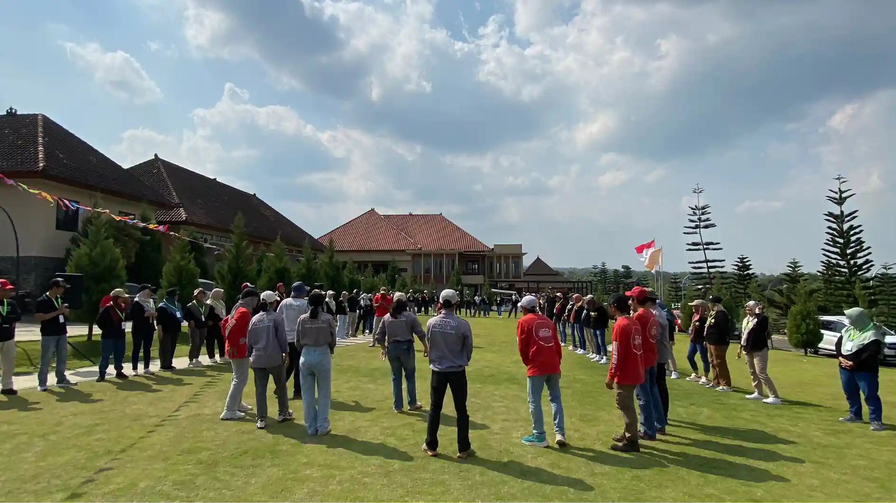

1. Apa Itu Permainan Outbound Seru?
Dalam dinamika organisasi modern, interaksi antarkaryawan sering kali terbatas pada urusan pekerjaan teknis, koordinasi email, atau rapat evaluasi mingguan. Di tengah ritme target yang padat, suasana kerja berpotensi menjadi kaku dan berjarak. Di sinilah kehadiran permainan outbound seru mengambil peran penting.
Permainan outbound adalah rangkaian simulasi fisik dan logika ringan yang dilakukan di alam terbuka atau ruang lapang. Berbeda dengan pelatihan kelas konvensional, simulasi ini menggunakan pendekatan berbasis pengalaman langsung (experiential approach). Tujuannya bukan untuk menilai performa individu secara kaku, melainkan merangsang spontanitas, tawa bersama, dan kolaborasi alami antar-rekan sejawat.
2. Mengapa Aktivitas Menyenangkan Penting dalam Kegiatan Perusahaan?
Banyak praktisi HRD menyadari bahwa tidak semua cara membuat tim kompak harus berupa meeting atau training formal. Terkadang, percakapan yang paling jujur dan hubungan kerja yang paling erat justru terbangun saat rekan kerja menertawakan kesalahan lucu dalam sebuah permainan beregu.
Aktivitas luar ruang yang menyenangkan membantu menciptakan suasana lebih rileks bagi seluruh staf. Kegiatan semacam ini memberikan kesempatan berinteraksi di luar rutinitas harian serta dapat menjadi aktivitas penyegar setelah periode kerja yang intensif. Meskipun efek yang dirasakan dapat berbeda berdasarkan kondisi peserta dan desain kegiatan, suasana santai terbukti mempermudah karyawan lintas departemen untuk saling mengenal kepribadian masing-masing secara lebih personal.

Kesalahan Team Building Kantor
Ketahui 3 kesalahan mendasar yang sering membuat kegiatan gathering perusahaan kurang berdampak pada kekompakan tim.
3. Kriteria Game Outbound yang Cocok untuk Karyawan
Memilih permainan untuk karyawan korporat tidak bisa disamakan dengan kegiatan anak sekolah. Ada beberapa kriteria penting yang perlu diperhatikan oleh panitia atau HRD:
- Inklusif dan Ramah Semua Usia: Permainan tidak boleh menuntut ketahanan fisik ekstrem sehingga seluruh staf dari berbagai jenjang usia dapat berpartisipasi dengan nyaman.
- Mengutamakan Kerja Sama: Game harus membutuhkan keterlibatan minimal 3–5 orang per tim, sehingga tidak didominasi oleh satu individu saja.
- Aturan Sederhana: Skenario permainan harus mudah dipahami dalam waktu 2–3 menit briefing agar tidak memicu kebingungan di lapangan.
- Mengundang Humor Spontan: Mekanika tantangan dirancang unik agar menciptakan momen lucu tanpa mempermalukan peserta mana pun.

Aktivitas kelompok outdoor yang dirancang dinamis mendorong setiap anggota tim untuk berkontribusi aktif dan saling mendukung.
4. Rekomendasi 5 Game Outbound Terkocak untuk Karyawan 2026
Game 1 — Estafet Kreatif (The Crazy Relay)
Estafet Kreatif adalah modifikasi dari lomba estafet tradisional dengan menambahkan rintangan unik yang memancing tawa. Peserta dalam satu regu harus memindahkan benda tertentu—seperti bola pingpong di atas spons basah, balon air tanpa menggunakan telapak tangan, atau sarung bersama—secara berurutan dari garis start ke finish.
Fokus utama permainan ini adalah koordinasi gerak dan komunikasi instruksi yang cepat. Ketika gerakan regu tidak sinkron, momen-momen lucu sering terjadi secara spontan, membuat suasana kompetisi berubah menjadi penuh canda tawa.
Game 2 — Human Knot (Simpul Manusia)
Peserta berdiri melingkar rapat, kemudian saling mengulurkan tangan kanan dan kiri untuk memegang tangan rekan yang berbeda di seberang lingkaran. Tugas kelompok adalah mengurai jalinan tangan yang saling menyilang tersebut menjadi satu lingkaran utuh tanpa melepaskan pegangan tangan sama sekali.
Permainan ini melatih problem solving kolektif, kelenturan komunikasi, serta kepemimpinan situasional. Setiap anggota tim harus berdiskusi menentukan siapa yang harus melangkah, memutar badan, atau merunduk terlebih dahulu.
Game 3 — Blind Obstacle (Navigasi Mata Tertutup)
Salah satu peserta mengenakan penutup mata dan harus melintasi jalur rintangan sederhana (misalnya ranjau botol air atau tali plastik). Rekan satu timnya hanya diperbolehkan memberikan instruksi verbal dari pinggir arena tanpa boleh menyentuh.
Keseruan memuncak ketika suara instruksi dari berbagai regu saling bersahutan di lapangan. Game ini menjadi simulasi luar biasa untuk melatih kepercayaan (trust building) serta kejelasan dalam menyampaikan arahan kerja.
Game 4 — Treasure Hunt (Perburuan Petunjuk Strategis)
Setiap regu dibekali lembar petunjuk misteri, teka-teki logika, atau koordinat lokasi di area outbound. Regu harus bekerja sama memecahkan petunjuk untuk menemukan pos-pos rahasia yang menyimpan potongan puzzle misi perusahaan.
Game ini sangat cocok untuk melatih pembagian peran, manajemen waktu, dan kolaborasi strategis dalam kelompok menengah hingga besar.
Game 5 — Tantangan Kelompok Kreatif (Creative Team Mission)
Dalam game ini, setiap tim diberikan bahan-bahan sederhana (seperti pipa paralon, koran bekas, bambu, dan tali) untuk membangun struktur tertentu dalam waktu terbatas—misalnya jembatan pengalir kelereng atau kendaraan replika. Setelah selesai, seluruh tim wajib menampilkan yel-yel dan mempresentasikan hasil karyanya di hadapan fasilitator.
Aktivitas ini memicu kreativitas luar biasa dan memberikan panggung bagi ide-ide tak terduga dari anggota tim.

Panduan Memilih Vendor Outbound Perusahaan
Pelajari indikator krusial dalam memilih mitra event organizer outbound yang profesional, aman, dan transparan.
5. Matriks Komparasi Karakteristik Permainan Outbound
Berikut adalah ringkasan karakteristik dari kelima permainan outbound di atas untuk memudahkan Anda menyusun agenda gathering kantor:
| Permainan | Fokus Aktivitas | Cocok Untuk | Tingkat Tantangan |
|---|---|---|---|
| Estafet Kreatif | Koordinasi & komunikasi | Kelompok besar | Ringan–Sedang |
| Human Knot | Problem solving & teamwork | Kelompok kecil–menengah | Sedang |
| Blind Obstacle | Kepercayaan & komunikasi | Kelompok kecil | Sedang |
| Treasure Hunt | Strategi & kolaborasi | Kelompok menengah–besar | Sedang–Tinggi |
| Tantangan Kreatif | Kreativitas & kerja sama | Beragam kelompok | Fleksibel |
Keceriaan saat menyelesaikan tantangan bersama mempererat rasa saling percaya antarkaryawan.
6. Cara Memilih dan Menyesuaikan Game Berdasarkan Peserta
Keberhasilan program fun games sangat bergantung pada ketepatan panitia dalam menyesuaikan format kegiatan dengan profil peserta:
- Berdasarkan Jumlah Peserta: Jika peserta berjumlah 20–40 orang, permainan berbasis rotasi pos lingkaran seperti Human Knot dan Blind Obstacle sangat efektif. Untuk rombongan lebih dari 100 orang, format Estafet Massal atau Treasure Hunt terpadu lebih direkomendasikan agar tidak ada peserta yang menganggur terlalu lama.
- Menyesuaikan Tingkat Kesulitan: Jangan membuat aturan yang terlalu rumit pada sesi awal. Mulailah dengan simulasi es breaking ringan berdurasi 10 menit, kemudian tingkatkan kompleksitas tantangan secara bertahap menuju simulasi strategi.
7. Pentingnya Briefing, Keselamatan, dan Debrief Reflektif
Meskipun bertajuk fun games yang penuh tawa, standar keselamatan dan alur pembelajaran tetap harus diperhatikan dengan serius:
Safety & Briefing: Sebelum permainan dimulai, fasilitator wajib memeriksa kondisi arena dari lubang atau pecahan kaca, memastikan peserta telah melakukan peregangan ringan, serta menjelaskan batasan gerak yang aman.
Sesi Debriefing: Setelah seluruh game berakhir, luangkan waktu 15–20 menit untuk sesi refleksi singkat. Fasilitator mengajak peserta mendiskusikan apa yang dirasakan selama permainan, bagaimana koordinasi terbangun, dan bagaimana nilai kerja sama tersebut dapat diintegrasikan ke dalam program team building perusahaan di lingkungan kantor sehari-hari.
8. Contoh Susunan Rundown Fun Games Setengah Hari
Berikut referensi struktur susunan acara fun games half-day yang umum diterapkan:
- 08.00 – 08.30: Kedatangan peserta, welcome drink, dan pembagian grup.
- 08.30 – 09.00: Ice Breaking, senam peregangan ceria, dan kompetisi yel-yel regu.
- 09.00 – 10.30: Rotasi Pos Fun Games (Estafet Kreatif, Human Knot, Blind Obstacle).
- 10.30 – 11.30: Final Mega Challenge (Treasure Hunt / Tantangan Kreatif Bersama).
- 11.30 – 12.00: Sesi debriefing, pengumuman tim terkompak, dan foto bersama.
- 12.00 – 13.00: Makan siang santai dan ramah tamah.
9. Checklist HRD Sebelum Memilih Permainan Outbound
Checklist Persiapan Fun Games:
- Apakah profil fisik dan rentang usia seluruh peserta sudah dipetakan?
- Apakah lokasi memiliki area lapang berumput yang teduh dan aman?
- Apakah perlengkapan P3K standar dan air mineral mencukupi di lapangan?
- Apakah susunan game memiliki variasi antara aktivitas gerak dan adu strategi?
- Apakah fasilitator yang memandu memahami cara menjaga antusiasme audiens?

Paket Fun Games Perusahaan
Eksplorasi modul kegiatan rekreasi dan gathering lengkap yang dirancang khusus untuk memeriahkan acara outing kantor Anda.
Ingin Tim Kerja Anda Lebih Kompak dan Berenergi?
Ingin tim kerja Anda lebih kompak dan mendapatkan aktivitas yang lebih segar? Konsultasikan kebutuhan paket fun games perusahaan bersama Vendor Outbound melalui WhatsApp +62 82211221909.
Pertanyaan yang Sering Diajukan (FAQ)

Arby Ardiansyah
Praktisi pengembangan SDM dan perancang program experiential learning dengan pengalaman memfasilitasi berbagai kegiatan outbound korporat, institusi, dan team building di Indonesia.